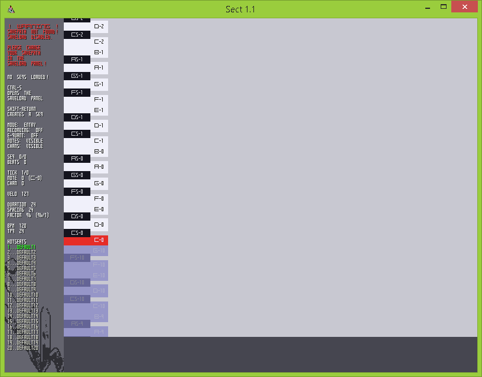

Sect: Tutorial
This will be a short tutorial on Sect's commands and functions.
It is designed to help users reach a point where they can use Sect for music composition.
Useful Links:
Commands List
Source Code
Downloading and Running
Go to Sect/releases, and download the newest version of Sect, making sure to grab a binary that is compiled for your OS.
(.love for Linux, osx for OSX, win32/win64 for Windows.)
Then, download and install Pd-extended (available for Linux, OSX, and Windows).
Now, at this point, depending on your OS, you should...
Linux
First, download and install LOVE2D.
Then, place Sect_1.0.1.love in whatever directory you prefer, and run it. It ought to run as a LOVE2D application automatically.
Warning!
Some Linux distros will have problems installing Pd-extended, and/or running LOVE2D programs. This is largely uncharted territory, alas.
Mac OS X
Extract Sect_1.0.1_osx.zip, place Sect_1.0.1.app in whichever folder you prefer, and run it.
Windows (32-bit)
First, extract Sect_1.0.1_win32.rar and place its contents in whichever folder you prefer, but make sure to keep all of its EXE and DLL files in the same folder as one another.
Then, double-click Sect_1.0.1_win32.exe and run it.
Windows (64-bit)
First, extract Sect_1.0.1_win64.rar and place its contents in whichever folder you prefer, but make sure to keep all of its EXE and DLL files in the same folder as one another.
Then, double-click Sect_1.0.1_win64.exe and run it.
You should see a loading screen as Sect generates its data files; this might take a few seconds, but it will be faster on all subsequent launches.
After the loading screen is done, this window should appear:

Success! Now let's set up the personalized settings, for save-load location and color theme.
Changing The Default Settings
Now that Sect has generated its data-files, we have to edit them slightly, so that Sect's internal save-load directory is correct.
Close Sect itself, and...
Linux
Go to ~/.sect, and open "user-prefs.lua" in a text editor.
Mac OS X
Go to ~/Library/Application Support/sect, and open "user-prefs.lua" in a text editor.
Windows
Go to C:/Users/Username/AppData/Roaming/sect, and open "user-prefs.lua" in a text editor.
savepath = "C:/Users/Christian/Documents/MUSIC_STAGING/",
...And change it to the directory that you want your MIDI savefiles to reside in. If you don't do this, it will try to save it in the directory I use for development; the chances that this default directory will work for you are minimal.
Make sure that when you change this line, you leave the quotes, comma, and equals-sign the same, or else it will break the Lua table's syntax.
Save the file, and close.
Note:
In user-prefs.lua, you can also change:
- Hotseat names
- Undo depth
- Keyboard-piano keys
- Command keychords
- OSC port
- Theme colors
- Fonts
- Background images
- Element sizes
Making Your First MIDI Sequence
Open up Sect again.
To create a new sequence, hit Shift-Enter. This will bring up many new elements in the Sequence-Grid panel.
Without annotations:

With annotations:

A - Active note. C-0 corresponds to MIDI-NOTE 0; G-10 corresponds to MIDI-NOTE 127.
B - Active tick. A tick is a sub-unit of a beat. The default value is 24 TPQ (Ticks Per Quaver), making for 96 ticks per beat.
C - Reticule. This marks the location where the active note and the active tick meet. Its rightmost triangle, which falls to the right of circle "C" in the example image, shows how long a note would be if it were created.
The reticule's default colors are: bright aqua while recording in Play Mode; mellow blue and white when not recording in Play Mode; bright yellow when recording in Generator Mode; and dusky yellow-brown when not recording in Generator Mode. You'll learn about modes later on.
D - Active sequence.
E - List of all currently-loaded sequences. Each sequence corresponds to a MIDI track. This panel is clickable!
F - Beat-triangle. These triangles are attached to each beat-tick, and show which beat it is. Since we've just created a new sequence, all beat-triangles in the example image are labeled "1", as the new sequence is only 1 beat long.
G - Currently playable notes. These correspond to a piano-layout on the letter keys of your keyboard, and they will jump upwards or downwards depending on which octave the Reticule is in.
Here's the default layout for the keyboard-piano:

You can use these keys to enter any of the currently playable notes. Or, you can hit Enter to enter the active note.
So, let's navigate to your octave of choice with Up, Down, Shift-Up and Shift-Down, and enter some notes!

But what's this? The sequence is so short that you could only enter four notes! Well, worry not: there are commands to give you various types of control here.
First, we need to shorten those notes. Hit Ctrl-A for Select-All, then Shift-Tab-Left a few times to shorten their duration.
Okay, I lied. Use Shift-Tab-Right to lengthen them again, and Ctrl-Shift-A to clear selection.
You could make a ridiculously quick sequence by reducing Spacing (Semicolon, Apostrophe, Shift-Semicolon, Shift-Apostrophe) and Duration (Square brackets, Shift-Square brackets), or a sequence with slower notes by moving them in the other direction.
But how do we lengthen the sequence itself, to hold more notes? To add a number of ticks equal to the Spacing value, hit Tab-Enter. Note that, if you do this in the middle of a sequence that contains notes, the notes to the right of the Reticule will be pushed forward.
Change the notes' MIDI channel with Ctrl-Square brackets, their velocity with dash, equals, Shift-dash, Shift-equals, and play around putting a sequence together.
So now that we have a sequence, how do we save it?
Ctrl-S will save it to the current hotseat. You can tab between hotseats with Ctrl-number and Shift-Number, and load the hotseat-file's contents with Ctrl-O.
Remember that hotseat filenames can be changed in your user-prefs.lua.
Sending Example-Notes
You may have noticed that, so far, Sect is silent. Because of LOVE2D's limitations, Sect cannot route MIDI on its own, but there is a Puredata script to help.
Download SectTestOSCMIDI, and open "test-osc.pd" with Pd-extended. You should see this:

For Puredata to send MIDI notes itself, we have to change its MIDI settings.
Go to Pd-extended's main window, open the "Media" menu, and select "MIDI Settings..."

A tiny window will appear.

Click the box to the right of "Output device 1", and a menu will pop up, displaying all currently-existing MIDI devices. Select your device of choice from the list; then, click "Apply" and "OK".
Sect should now send MIDI-NOTEs to that MIDI device, as long as both Sect and test-osc.pd are running at the same time.
Note:
If you have changed the "oscsend" port in user-prefs.lua, you will have to enter the corresponding port-number into test-osc.pd's "OSC-IN port" number-box when the script is launched.
Advanced Editing
Now that you have all of the basics down, it's time to learn a few helpful advanced techniques.
Undo and Redo are Ctrl-Z and Ctrl-Y, respectively.
The default depth of undo-memory is 100 steps, but you can change this in user-prefs.lua.
A selection-window can be created with Ctrl-Comma and Ctrl-Period, and dismissed with Ctrl-Slash. All notes whose first tick falls within this window will be highlighted as the current selection.
Copy is Ctrl-C, Cut is Ctrl-X, and Paste is Ctrl-V. Copy and Cut act upon the currently-highlighted notes.
Notes will be copied/pasted based on their tick-position in relation to the Reticule. Note-position will remain the same.
Additive Copy and Additive Cut are Ctrl-Shift-C and Ctrl-Shift-X. These will add notes to the currently-copied notes, rather than overwriting them. Again, notes are copied and pasted with positions relative to the Reticule.
Highlighted notes can be modified in various ways:
- Duration: Shift-Tab-Left, Shift-Tab-Right
- Channel: Shift-Tab-Up, Shift-Tab-Down
- Move: Tab-ArrowKeys (tickwise movement is based on the Spacing value)
- Velocity: Shift-Dash, Shift-Equals, Shift-Tab-Dash, Shift-Tab-Equals
- Humanize: Ctrl-H (strength is based on current global velocity)
Default cursor! LeftClick cursor! RightClick cursor!
Notes can also be highlighted with LeftClick or LeftClick-Drag, and additively highlighted with Shift-LeftClick or Shift-LeftClick-Drag.
Using RightClick on the Sequence Grid will move the Reticule to the clicked position; RightClicking on the Track Panel will make the clicked sequence into the active-sequence.
Remember that all of Sect's commands are visible in the Commands List:
Commands List
Advanced Modes
Now that you know how to send MIDI-OUT through test-osc.pd, you might have become annoyed at Sect's tendency to record every note that you play! Well, there's a handy solution to that: Escape toggles Recording on-and-off.
To play through the active sequence in realtime, hit Space.
Sometimes it is useful to view multiple sequences at once. For this reason, Shadow Mode exists. In any sequence, hit Backspace, and that sequence's notes will be displayed as shadows underneath the notes of the active sequence. Shadow Mode can be applied to multiple sequences simultaneously.
It can also be useful to see what shadows are underneath the current sequence's notes. So, to toggle whether to display or hide the active sequence's notes, hit Shift-Backspace.
Generator Mode
Generator Mode is a way to quickly generate a sequence of notes, within a given range of notes and ticks, as an alternative inroad to composition.
Let's give it a whirl. Hit Shift-Space to enter Generator Mode. The reticule should change color.

To automatically generate a potentially-interesting sequence, hit any keyboard-piano key, or Enter. The sequence will be generated in the octave above the note, including the note itself.
Here is an explanation of every sequence-generation parameter, and the key-commands to change them:
"K-Species": Shift-W up, Shift-Q down.
The number of notes in a given 12-note scale. A lower value will produce chord-like behavior. Due to exponential wheel-data complexity, the maximum value is 8.
"Scales": Shift-S up, Shift-A down.
The number of different scale-types to grab while generating the sequence.
"Wheels": Tab-S up, Tab-A down.
A wheel controls the order in which a scale's notes are played. This value controls the number of different wheels used while generating a sequence.
"Consonance": Shift-X up, Shift-Z down, Tab-X up 10, Tab-Z down 10.
How consonant or dissonant the selected scales will be. The more scales are pulled by the "Scales" value, though, the more they will diverge from the desired consonance rating.
"Scale Switch": Shift-R up, Shift-E down, Tab-R up 10, Tab-E down 10.
How likely the generator is to switch to a different scale after any given note.
"Wheel Switch": Shift-F up, Shift-D down, Tab-F up 10, Tab-D down 10.
How likely the generator is to switch to a different wheel after any given note.
"Density": Shift-V up, Shift-C down, Tab-V up 10, Tab-C down 10.
Controls how densely-packed the sequence will be. Higher density, more notes.
"Beat Stick": Shift-Y up, Shift-T down, Tab-Y up 10, Tab-T down 10.
Stickiness of major beat-factors. 100: fully prioritize major beats. 0: no special beat priority.
"Beat Length": Shift-H up, Shift-G down, Tab-H up 10, Tab-G down 10.
Secondary beat-length value, decoupled from global TPQ, to be used only while generating the sequence. If you want the sequence to reflect the global TPQ, set this value to be identical to global TPQ.
"Beat Bound": Shift-N up, Shift-B down.
Number of beats, in total, that the generated sequence will cover. Keep in mind that this refers to the Beat-Length-based beats, not the TPQ-based beats.
"Beat Grain": Shift-I up, Shift-U down, Tab-I up 10, Tab-U down 10.
Granularity of ticks that are considered for note placement. Smaller number, more incidental; larger number, more beat-focused.
"Note Grain": Shift-K up, Shift-J down, Tab-K up 10, Tab-J down 10.
Minimal possible note length. Smaller number, shorter average durations; larger number, longer average durations.